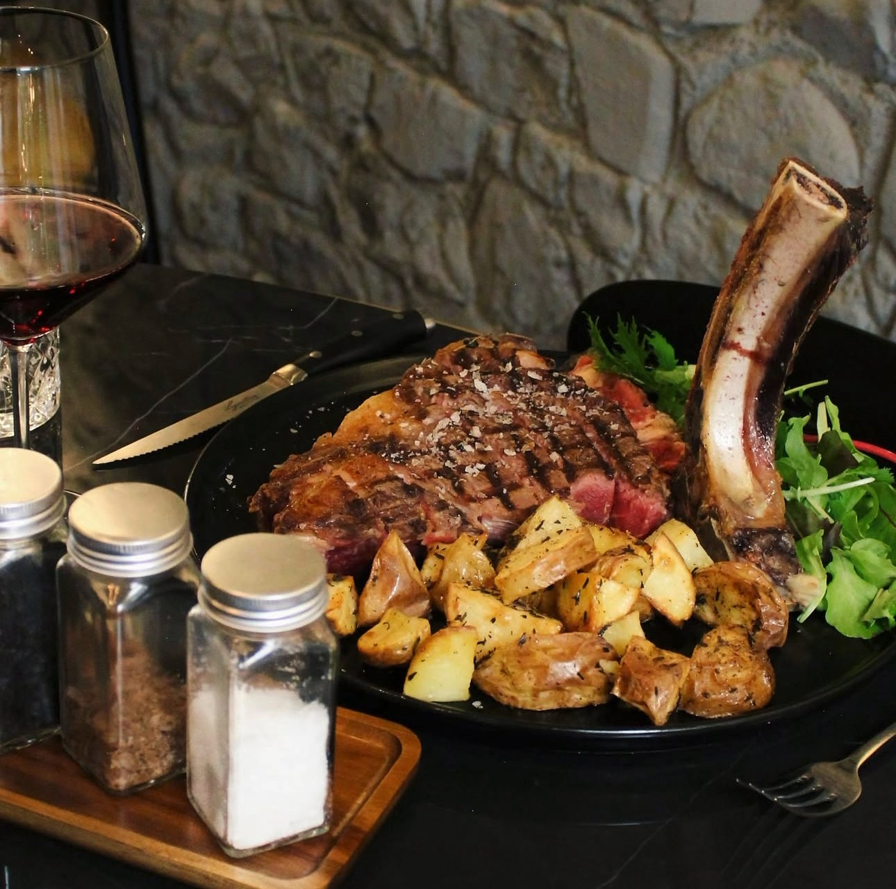
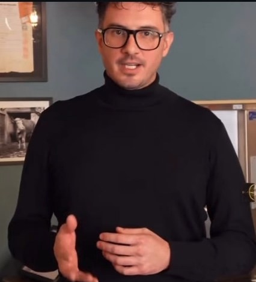
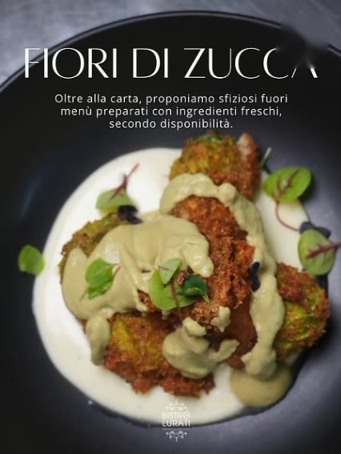

Costata & tomahawk
Sull’osso, alla griglia, con patate al forno. Da dividere.
Nel cuore di Porlezza, un luogo dove la tradizione incontra il gusto.
Per gli amanti della carne, e non solo.

Nel 1927 il nonno Lucio aveva un talento: riconoscere la carne buona senza bisogno di parole.

Una famiglia di macellai
Il Bistró Lurati nasce dalla volontà di Stefano Lurati di rendere omaggio al nonno, macellaio. Da quella bottega abbiamo ereditato l’occhio per il taglio giusto, il rispetto per la materia prima e la convinzione che la qualità non si improvvisa.
Oggi la stessa cura arriva in tavola: carni scelte una a una e frollate con pazienza, pasta artigianale tirata in casa, piatti che seguono le stagioni. Una conduzione familiare, dove chi ti accoglie conosce ogni piatto, e dove i dettagli (la sala, la mise en place, persino i grembiuli) raccontano chi siamo.
Lo sguardo del macellaio, in cucina. Selezioniamo tagli diversi per razza e tempo di frollatura, e ti consigliamo al tavolo quello giusto per te.

Il piatto della stagione
Soffice di zucca e crumble ai porcini.
Tagliata a mano, condita al momento: il modo più sincero per assaggiare una carne di qualità.
La frollatura
Sapore pulito e fibra tenera: il gusto più vicino alla carne appena tagliata. Ideale per battute e carpacci.
Sull’osso, alla griglia, con patate al forno. Da dividere.
Magra e delicata: battute al coltello e ripieni della pasta fresca.
Macinato da noi, pane morbido, chips croccanti.
Rubia Gallega, Black Angus, Wagyu: chiedi cosa c’è oggi in cella.

Fuori menù & vegetariano
Oltre alla carta, proponiamo sfiziosi fuori menù preparati con ingredienti freschi, secondo disponibilità.
Amiamo la carne, ma non la imponiamo a nessuno. Ogni stagione ci sono piatti vegetariani pensati come piatti veri, con la stessa cura: pasta artigianale, verdure di stagione, formaggi delle valli. Allo stesso tavolo, chi ordina la costata e chi no escono contenti entrambi.
Vedi i piatti vegetariani
Un angolo verde nel centro storico di Porlezza, a due passi dal lago. Nella bella stagione si pranza e si cena all’aperto, tra piante, luce naturale e un calice di vino.
Dentro, la sala: muri in pietra, parquet a spina di pesce, luce calda. Pulita e in ordine a ogni servizio, perché per noi l’accoglienza comincia da lì.

Seguici
@bistro_luratiI coperti sono pochi: ti consigliamo di prenotare, soprattutto nel fine settimana.